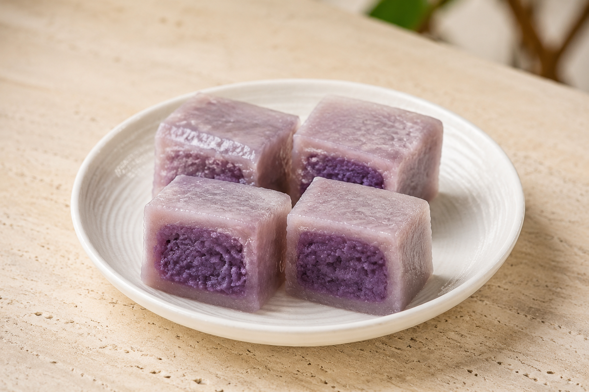
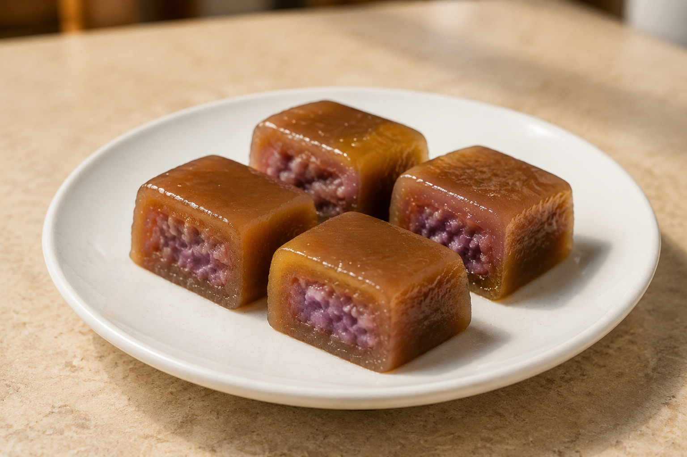
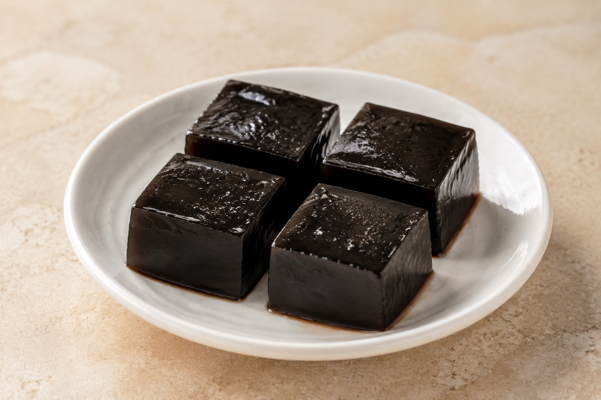
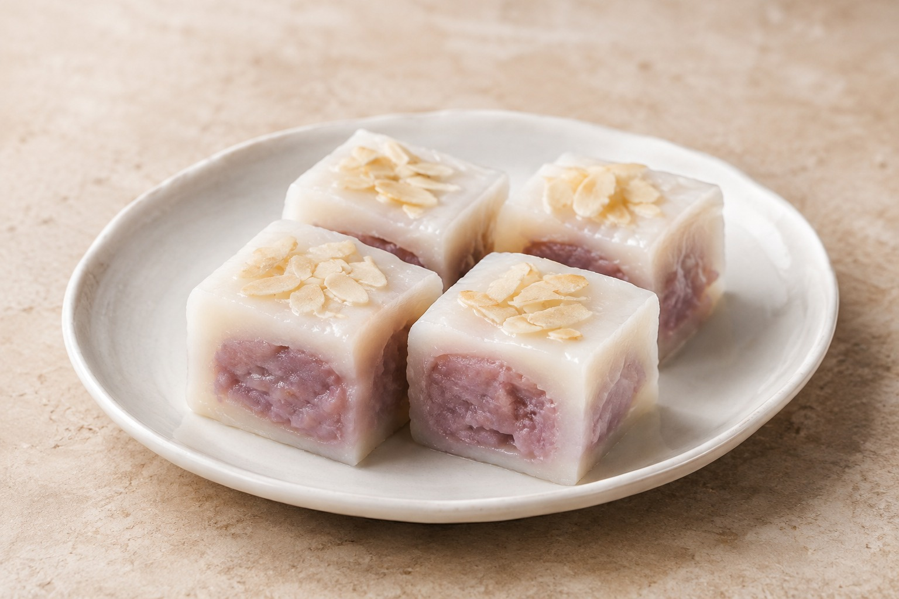
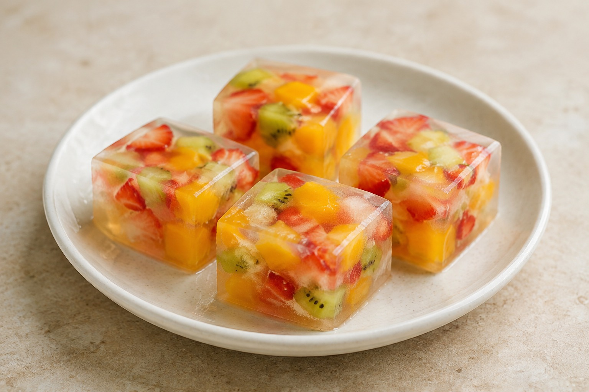
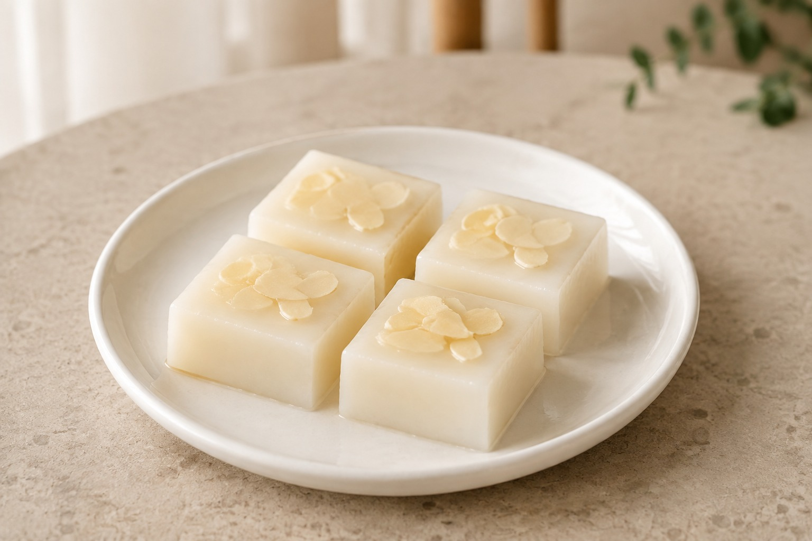

芋頭涼糕
選用香濃芋頭製作，口感柔軟滑嫩、清爽Q彈， 每一口都能品嚐到自然芋香。
OUR PRODUCTS
手工製作・每日新鮮

選用香濃芋頭製作，口感柔軟滑嫩、清爽Q彈， 每一口都能品嚐到自然芋香。

香醇雞蛋布丁風味融入Q彈滑嫩的涼糕， 蛋香與奶香濃郁順口。

黑糖香氣搭配香濃芋頭， 口感Q彈滑嫩，香甜而不膩。

清香仙草風味，冰涼爽口， 適合喜歡清爽口感的您。

杏仁香氣搭配綿密芋頭， 雙層風味一次享受。

一盒多種水果口味，每日搭配可能不同， 每次品嚐都有不同驚喜。

使用純杏仁製作，杏仁香氣濃郁， 口感細緻滑嫩、清爽不膩。